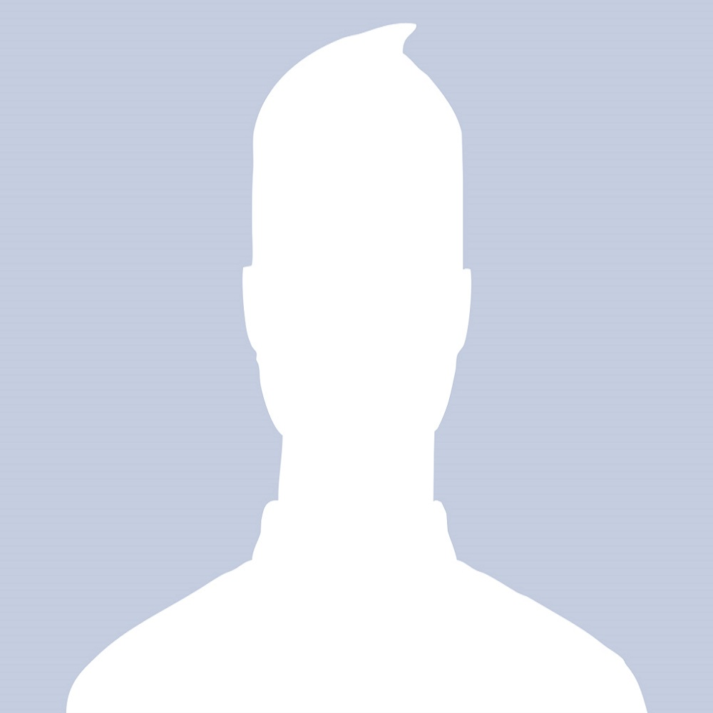

<md-dialog layout="column" layout-align="start center" layout-padding style="min-height: 40%;min-width: 40%">
    <div style="width: 100%" layout="row" layout-align="end start">
        <button class="md-button md-icon-button">
            <ng-md-icon ng-click="cropDone(false)" icon="close" class="close-btn"></ng-md-icon>
        </button>

    </div>


    <div>
        <canvas ng-show="cropper.sourceImage" width="500" height="300" id="canvas" image-cropper
                image="cropper.sourceImage"
                cropped-image="cropper.croppedImage" crop-width="200" crop-height="200" keep-aspect="true"
                touch-radius="30">
        </canvas>
        
        <input ng-show="0" type="file" id="inputFileToLoad" img-cropper-fileread image="cropper.sourceImage"/>


    </div>
    <!--<div ng-show="cropper.croppedImage!=null"></div>-->
    <div layout="row" ng-show="cropper.sourceImage">
        <button class="md-button md-raised md-primary md-icon-button" ng-click="cropDone(true)">
            <ng-md-icon icon="done" style="fill: #fff /*#E91E63*/" class="md-secondary md-hue-3"></ng-md-icon>
        </button>
        <button class="md-button md-raised md-primary md-icon-button"  ng-click="cropDone(false)">
            <ng-md-icon icon="close" style="fill: #fff /*#E91E63*/" class="md-secondary md-hue-3"></ng-md-icon>
        </button>
    </div>

</md-dialog>